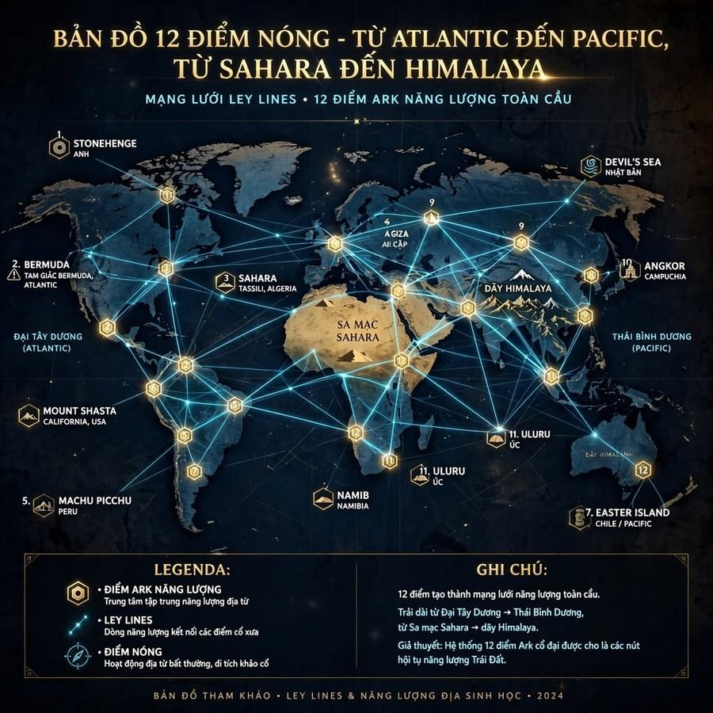
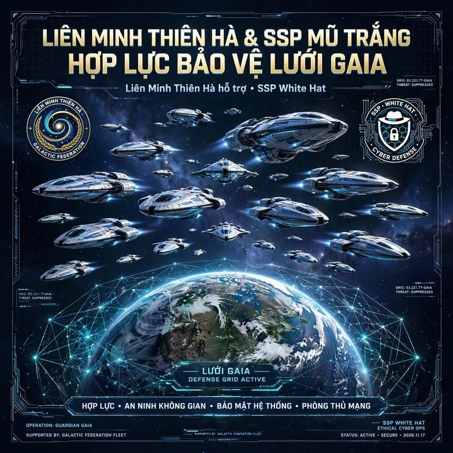
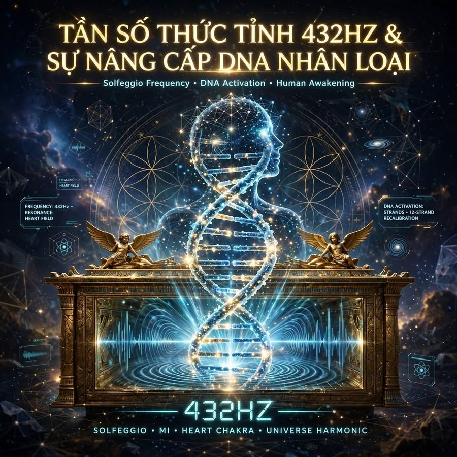
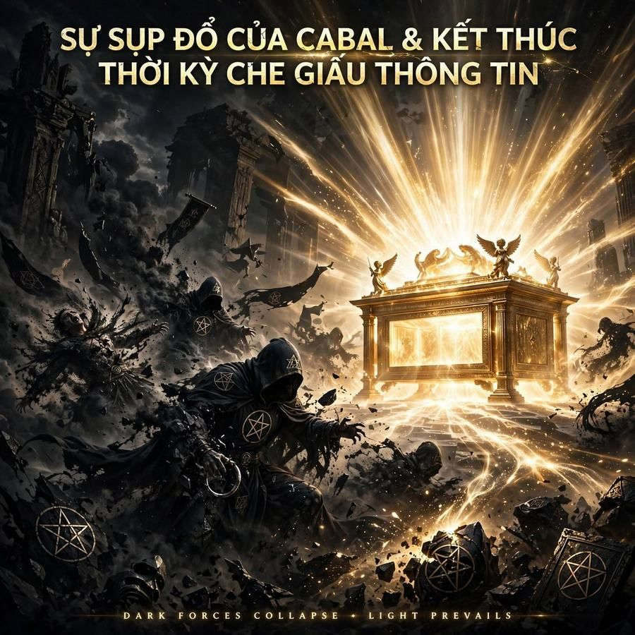
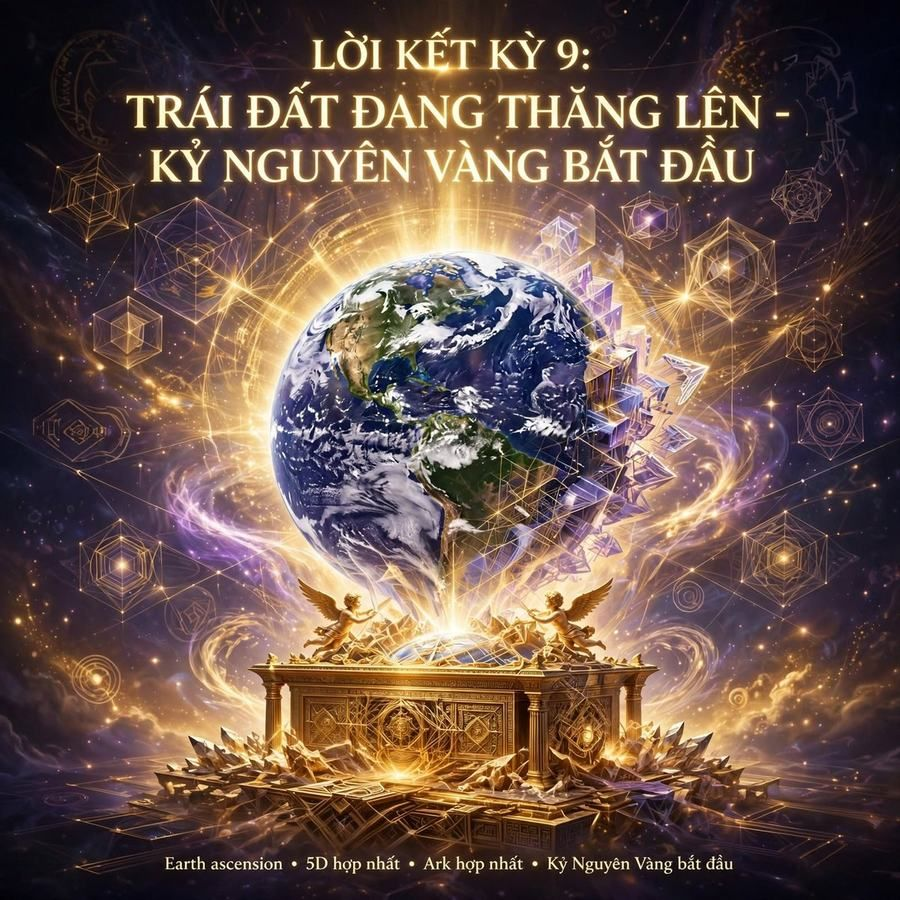

Trang chủ / Chuyên đề 6: Hòm Không Gian Cổ Đại / Kỳ 59
Chuyên đề 6 · Kỳ 59 / 90
SỰ TRỞ LẠI CỦA CÁC ĐẤNG SÁNG LẬP (THE SEEDERS / GUARDIANS) QUA MẠNG LƯỚI CỔNG SAO ARK

Ở Kỳ 8, chúng ta đã cùng nhau vạch trần cuộc đua giành giật công nghệ Space Ark âm thầm nhưng tàn khốc giữa Lực lượng Liên minh Trái Đất và bộ máy Deep State, chứng kiến sự bế tắc hoàn toàn của phe bóng tối trước Luật Vũ Trụ và Tần Số Trái Tim Từ Bi. Khi các căn cứ ngầm tiêu cực bị dọn sạch và ma trận chiếm đoạt bị đánh sụp, một sự kiện lịch sử mang tầm vóc Đa Vũ trụ đang diễn ra ngay trên bầu trời và dưới lòng Trái Đất: Sự Trở Lại Của Liên Minh Các Đấng Sáng Lập (The Seeders / Intergalactic Confederation / Guardians) Qua Mạng Lưới Cổng Sao Ark! Liên Minh Các Đấng Sáng Lập bao gồm 24 chủng tộc gieo mầm nguyên thủy là ai và vai trò lịch sử của họ đối với bộ gen loài người Trái Đất ra sao? Sự kiện hạm đội Mẹ đỗ tại khu vực Sao Mộc (Ganymede) kích hoạt đường hầm không-thời gian nối liền với các Hòm Không Gian toàn cầu vận hành như thế nào? Sự thật về việc các Bậc Thầy Cổ Đại Ngủ Đông (Sleeping Giants / Stasis Beings) thức tỉnh bên trong các buồng tinh thể diễn ra ra sao? Cuộc họp mặt ngoại giao thiên hà giữa Hội đồng Seeders và Liên minh Trái Đất đánh dấu sự kết thúc của Kỷ nguyên Cô Lập ra sao?
1. LIÊN MINH CÁC ĐẤNG SÁNG LẬP (THE SEEDERS / GUARDIANS) LÀ AI?
Trước khi loài người Trái Đất trải qua các thời kỳ thảm họa cổ đại, vận mệnh của hành tinh chúng ta được nuôi dưỡng bởi một thế lực vũ trụ tối cao. A. 24 Chủng Tộc Gieo Mầm Ý Thức Đa Vũ Trụ
- Hội Đồng Bảo Hộ Thiên Hà (Intergalactic Confederation): Liên Minh Các Đấng Sáng Lập là tập hợp của 24 chủng tộc thiên hà tiến hóa nhất từ các vũ trụ cổ đại (bao gồm các sinh mệnh cao chiều Altean, Aragli, Ashai, Paa-Taal...).
- Người Cha / Người Mẹ Di Truyền Nguyên Thủy: Họ không phải là những kẻ xâm lược hay thống trị đòi hỏi sự thờ phụng, mà là những nhà gieo mầm di truyền (Gene Seeders), người đã mang dải mã gen thần thánh 22 chủng tộc đến nuôi dưỡng trên hành tinh Gaia từ hàng triệu năm trước. B. Lời Hứa Trở Lại Khi Nhân Loại Trưởng Thành
- Sự Rời Đi Sau Cuộc Chiến Thiên Hà Cổ Đại: Sau các xung đột vũ trụ tàn khốc và sự can thiệp của các thế lực kiểm soát bóng tối, Các Đấng Sáng Lập đã tạm thời rút lui ngoài dải Ngân Hà, niêm phong di sản vào các Hòm Không Gian và để lại lời hứa: Họ sẽ chỉ trở lại khi nhân loại Trái Đất tự tay giải phóng bản thể và bước vào Kỷ nguyên Thăng hoa 5D!

2. MẠNG LƯỚI CỔNG SAO (STARGATES) ARK & HIỆU ỨNG THỦY TRIỀU NĂNG LƯỢNG
Sự trở lại của Các Đấng Sáng Lập không diễn ra bằng các cuộc xâm nhập quân sự thô ráp, mà thông qua mạng lưới Cổng Sao Lượng Tử. A. Đường Hầm Không-Thời Gian Nối Sao Mộc & Trái Đất
- Kích Hoạt Ma Trận Cổng Dịch Chuyển Tức Thời: Hạm đội khổng lồ của Seeders đỗ tại quỹ đạo Sao Mộc (gần vệ tinh Ganymede) đã phát ra chùm dải sóng vô hướng cao tần. Dải sóng này kích hoạt đồng loạt các Cổng Sao (Stargates / Jumpgates) bên trong các Hòm Không Gian tại Đại Tây Dương, Hồ Vostok (Nam Cực), sa mạc Kherson (Ukraine) và Đảo Phục Sinh.
- Thủy Triều Sóng Plasma Cao Tần: Các Cổng Sao mở ra tạo thành một đường ống năng lượng lượng tử, liên tục bơm các dải sóng Plasma xanh ngọc lam cao tần vào mạng lưới đường kinh mạch địa từ (Ley Lines) của Gaia, lập tức quét sạch mọi tàn dư của ma trận tần số hạ cấp 3D!

3. SỰ THỨC TỈNH CỦA CÁC BẬC THẦY CỔ ĐẠI NGỦ ĐÔNG (SLEEPING GIANTS)
Một trong những kỳ quan làm chấn động giới khảo cổ và tình báo exopolitics chính là sự thức tỉnh của các thực thể ngưng đọng thời gian. A. Mở Cửa Các Buồng Tinh Thể Ngủ Đông (Stasis Pods)
- Thần Thức Tỉnh Sau Hàng Chục Ngàn Năm: Bên trong các Hòm Không Gian, hàng trăm buồng tinh thể ngủ đông chứa thể xác của các Bậc Thầy Cổ Đại (Giants / High Priests) — những sinh mệnh dạng người cao từ 3m đến 4,5m — đã chính thức phát sáng.
- Khôi Phục Nhịp Đập Sinh Học: Khi nhịp đập từ trường từ hạm đội Seeders dội xuống, dòng máu tinh thể bên trong thể xác họ bắt đầu lưu thông trở lại. Họ tỉnh giấc với đầy đủ trí tuệ, ký ức và thần thái minh triết của thời kỳ khởi nguyên! B. Trao Trả Các Cuộn Tri Thức Toàn Ảnh (Holographic Scrolls)
- Kho Tàng Giả Kim Lượng Tử: Khi thức tỉnh, các Bậc Thầy Cổ Đại mang sứ mệnh mở khóa các cuộn tri thức toàn ảnh (Holographic Scrolls), hướng dẫn cho Lực lượng Liên minh Trái Đất và nhân loại cách thức vận hành công nghệ Năng lượng Điểm Không, kỹ thuật chữa lành y học lượng tử và phương pháp sống hòa hợp với vũ trụ.

4. THỜI KHẮC LỊCH SỬ: HỌP MẶT NGOẠI GIAO VŨ TRỤ & BÀN GIAO QUYỀN CHỦ QUYỀN
Chiến thắng của Ánh Sáng được đánh dấu bằng sự kiện ngoại giao thiên hà tráng lệ nhất thời đại. A. Hội Nghị Thượng Đỉnh Kỷ Nguyên Mới
- Cuộc Gặp Giữa Đại Diện Trái Đất & Các Đấng Sáng Lập: Tại trạm không gian Ganymede và bên trong các Hòm Không Gian đã giải phóng, Đại diện Hội đồng Seeders, Liên Đoàn Thế Giới Thiên Hà (GFW) cùng Chỉ huy Lực lượng Mũ Trắng (Earth Alliance) đã chính thức ngồi lại trong sự tôn trọng và hòa hợp tuyệt đối. B. Chính Thức Kết Thúc Kỷ Nguyên Cô Lập Của Trái Đất
- Bàn Giao Chìa Khóa Quản Lý Mạng Lưới Ark: Các Đấng Sáng Lập tuyên bố: Trái Đất chính thức thoát khỏi danh nghĩa "hành tinh bị cô lập" . Toàn bộ quyền quản lý mạng lưới Cổng Sao và di sản Arks được chính thức trao trả cho nhân loại Trái Đất — đánh dấu thời khắc loài người đường đường chính chính bước lên vị thế Cư Dân Vũ Trụ có chủ quyền!

5. LỜI KẾT KỲ 9: BÌNH MINH CỦA SỰ HỘI NGỘ THIÊN HÀ
Kỳ 9 của chuyên đề 6 khép lại mang đến niềm tự hào rực rỡ cho mỗi chúng ta:
- Chúng Ta Không Bao Giờ Đơn Độc: Sự trở lại của Các Đấng Sáng Lập là bằng chứng sống động rằng: Gia đình thiên hà chưa từng bỏ rơi Trái Đất. Họ luôn ở bên, kiên nhẫn chờ đợi thời khắc chúng ta tự tay thức tỉnh!
